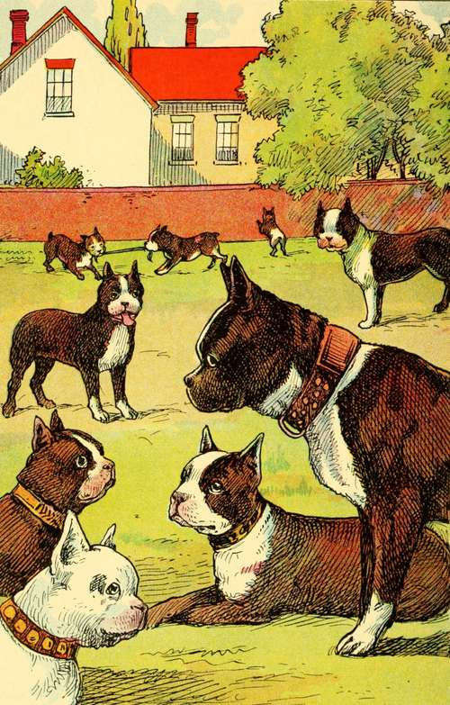
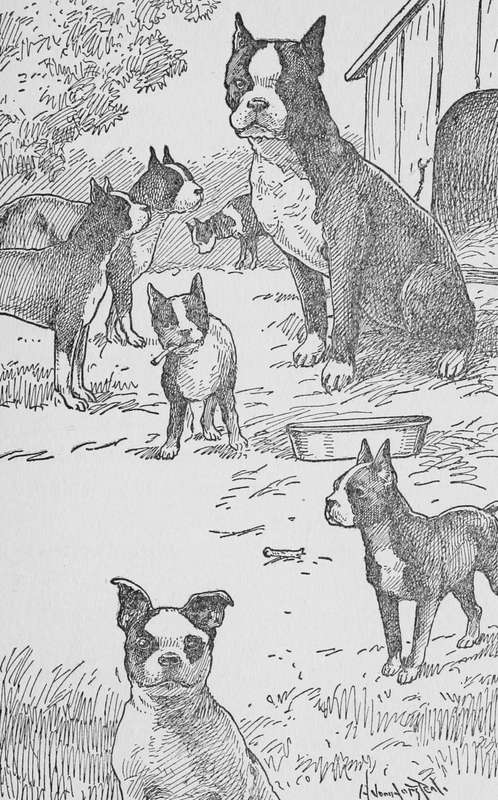
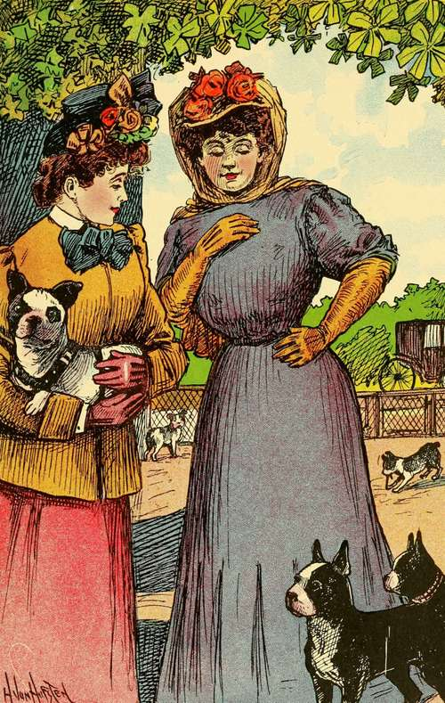
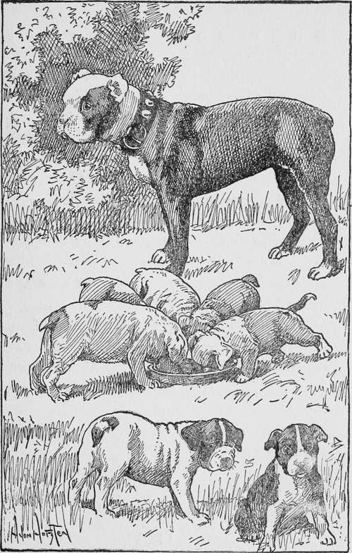

Chapter I. Gypsy's Family
Description
This section is from the book "Dogs And Puppies", by Frances Trego Montgomery.
Chapter I. Gypsy's Family
"Now, children," said Gypsy, an old mother Boston Terrier, I must begin to teach you some manners, for you will soon have to leave your old mother, and go out into the world and look after yourselves. I heard your master say that Mrs. Updike was coming to look at you this afternoon, and that she would give a hundred and twenty-five dollars for the puppy that suited her, if he could show the pedigree papers and they were satisfactory.
"What are pedigree papers?" asked one of the little fellows, whose name was Fritz.
"They are papers, dear, that tell who your great-great-grand parents were, who your great-grand-parents were, who your grand-parents were, and who your father and mother are. You came from a very illustrious family. Your grandfather Aladdin took all the blue ribbons from the dog shows for years. He was valued at two thousand five hundred—a good round sum to pay for any dog, and I wish that every one of you might live to be as illustrious as your grandfather".
"NOW CHILDREN," SAID GYPSY, "I MUST BEGIN TO TEACH YOU SOME MANNERS".
"Fritz, stop biting Pretty's ear, and pay attention to what I say," and Gypsy gave the mischievous puppy a box on the ear that made him suddenly sit very straight.
"I am going to give you some good advice, and if you will listen very carefully, and remember what I say, you will save yourselves much trouble and worry, and your masters and mistresses will love you, and treat you well. First of all—Buster, come back here!" Here Gypsy stopped until Buster came back. Buster was always hungry, and whenever anyone came into the yard, he thought it was time for dinner, but at the sound of his mother's voice, he knew she did not mean to waste any time, and ran back, and Gypsy went on:—
"NOW, CHILDREN, I MUST BEGIN TO TEACH YOU SOME MANNERS".
"First of all, never, never scratch or bite a child, no matter how badly it hurts you. Let it pull your ears and tail, and sit on you, but never, never, bite." And Gypsy here looked very solemn, as if to try to make her children see how wicked it would be for a dog to hurt a child.
"Another thing," she went on, "is this: When you are playing in the house, be very careful not to upset anything, and above all things, if you find a slipper or a shoe lying around anywhere, do not shake it to pieces, nor bite holes in it. If you do, you will be sure to be whipped and put out of doors".
"Can't we play at all," said Fritz. "Do they expect us to lie down and sleep all of the time, the way a cat does?"
"No, of course not," said Gypsy. "A little experience will teach you what you can play with. Maybe they will give you a ball, or maybe an old rubber, that you can play with whenever you want to.
THEY HAD A GREAT TIME DECIDING WHICH WAS THE PRETTIEST.
"And, children," here Gypsy looked straight at Buster, with a frown that made him hide his head behind Pretty, "no matter what else you do, don't steal from the pantry".
"I didn't," began Buster—, but his mother interrupted him. "No, I know you didn't, but you would have if you could".
"And another thing, almost the most important of all, is to remember to be dignified. You are not common dogs, and so must not forget always to be on your dignity. You are Boston Terriers, and your grandfather was Aladdin. Remember this, my children, and be proud of it. I should die of shame if any of my children should fail to live up to the reputation of our family".
And now wise old Gypsy saw that her puppies were restless, for it is very hard for puppies to sit still very long at a time, and so, with a parting warning to remember all she had told them, she let them run off to play.
It was well the mother gave the children this advice on the day she did, for the next morning the little family were scattered, never to be all together again nor have any family reunion as people do, but that is all in a dog's life.
Their master intended to go to Europe for the following winter, and because he did not want to keep so many dogs while away, had offered them for sale. And so, on the very next day they were to go to their new masters or mistresses, as the case might be.
The first to arrive was a fashionably dressed lady with her French maid. They "Ohed!" and "Ahed!" over the dogs, and had a great time deciding which was the prettiest.
"Oh madam, this one, she is zee most pretty. She have such soft white hair, and she will look most beautiful with zee French bow on zee back of her neck".
GYPSY AND HER FAMILY.
"You are right, Celeste, she will, and I can change the bows to match my gowns".
"Oh, mother, I don't want to go with them," said Pretty, for it was Pretty of whom they were speaking. "I am afraid the French maid will be cross when her mistress is not around. You know dogs can tell who are their friends and who are only pretending".
"I am very sorry you do not like her, dear, but be a good girl. Maybe the maid will not stay with the lady and you will like the next one better".
"Here Pretty, Pretty, Pretty, come out from under that manger," called the coachman who was taking care of the dogs. She had escaped from the coach-house into the stable where the horses were kept, and here she had hidden in the stall of her favorite horse, but the coachman fished her out.
Continue to: